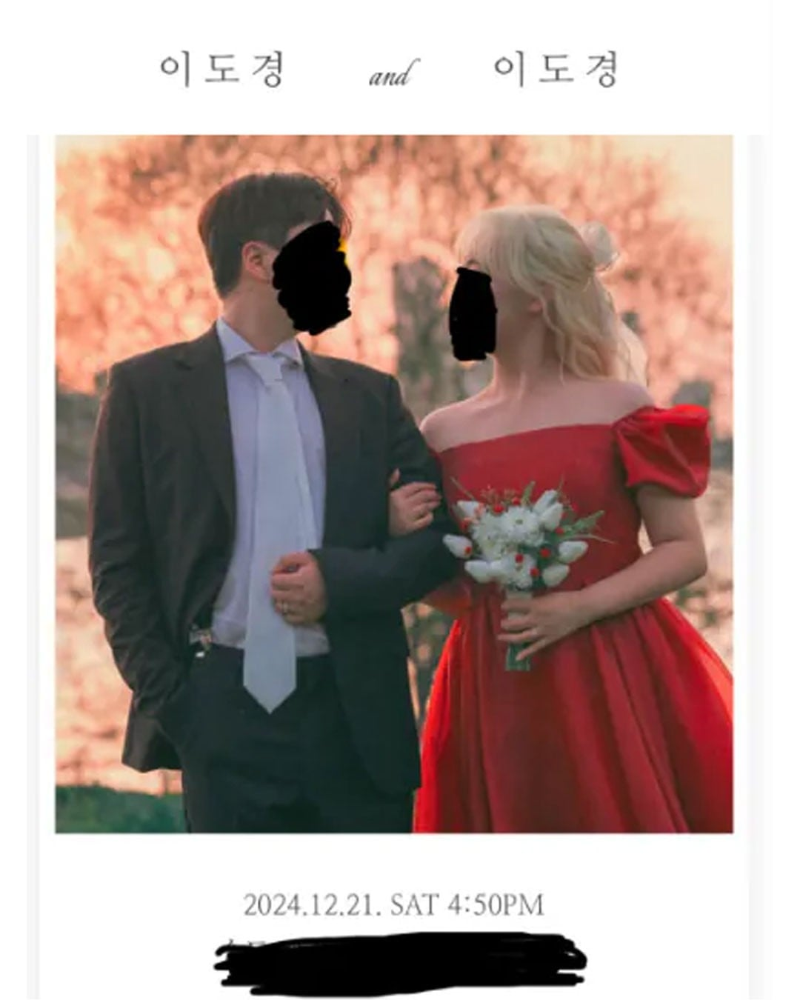
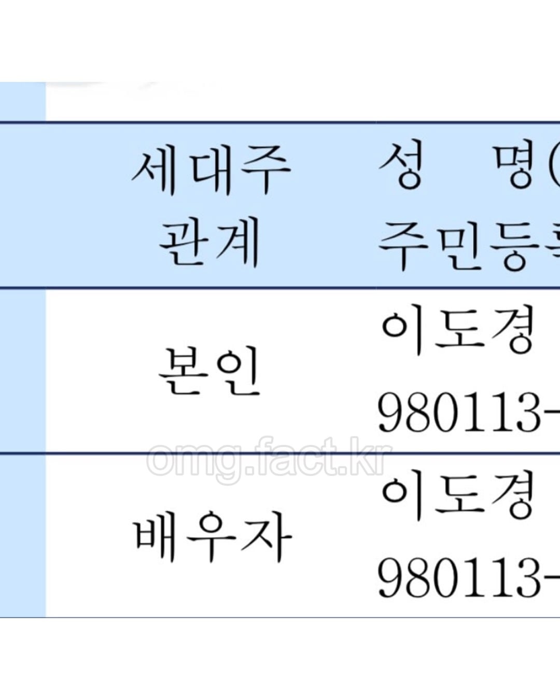
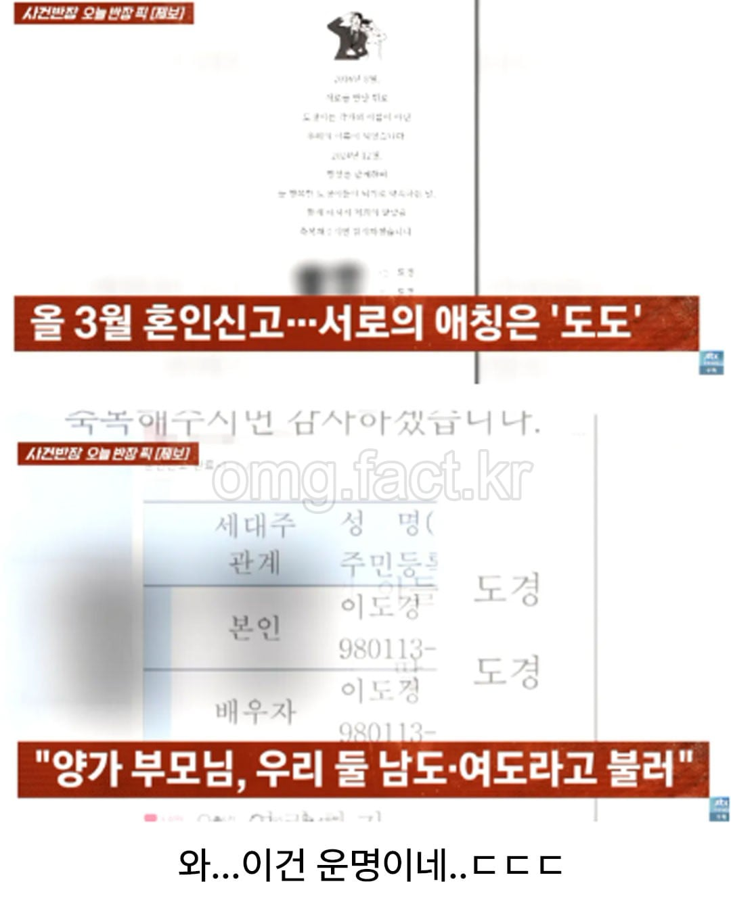

조선에 궁궐에 당도한것을 환영하오 낯선이여..
왜 도도와 경경이라고 부르지 않는것이지?
도둑과 경찰이 맞지 않나
한날 한시에 태어나지는.. 났다고?
유비 관우 자아앙비
마도와 빠도로 하자
마도 빠도 브라도
넌진짜 ㅋㅋ
ㅋㅋㅋㅋㅋㅋㅋㅋㅋ
ㅋㅋㅋㅋㅋㅋㅋㅋㅋㅋㅋㅋㅋㅋㅋㅋㅋㅋㅋㅋㅋㅋ
야 이거 인정이다 ㅋㅋㅋㅋㅋ 마도빠도젠틀맨
나한테는 니가 주간 베댓1등임
운명인걸
조..ㅈ 아니다
나중에 아이가 어디 부모님 이름 대답할때 잘 모르는 어른은 애가 어려서 잘 모르는건가 생각할듯 ㅋㅋㅋ
부모님 성함이 어떻게 되니?
이도경 이도경이요
이야... 난 생년월일 같은 여자 몇달 만났었는데.
생시만 다른건가 허허허
신기하네
태어난 시간만 다르겠군
내가 이도경이면 왠지 이도경 안만날거같은데 신기하네ㅋㅋㅋ
이도로 합시다
자식들 이름은 황도 백도로하자
사도경이 되셨군! 축하합니다
심지어.순애 ㄷㄷ
동성동본은 아니겠지
동성동본 금혼 폐지된지 20년됐어요 선생님
도둑과 경찰 ㄷㄷ
아이들은 일도 이도 삼도